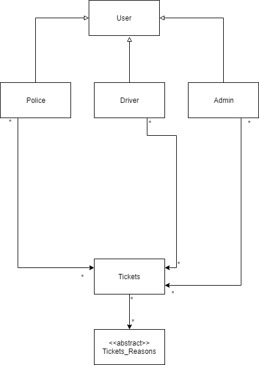

Version 1.0 approved
Prepared by:
Koushik Roy
Sidratul Muntaha
Nushrat Tanzeem
Date: 28th October 2018
Name |
Date |
Reason For Changes |
Version |
| Initial Revision | 28-11-2018 | No Changes | 1.0 |
This project deals with three sectors.
While writing this SDS, all the sections in this SDS has a bold font , and are larger than the subsections. Whereas, at the same time, the subsections also have bold fonts and are larger than the description of each subsections. The term App is also used throughout this document in short form of Application.
We will be following the client-server model in our system. Here, the client is responsible for sending requests and receive responses from the server. As this is the most common model when implementing a system so, we opted to go with this one. Along with the Client-Server model we have chosen to follow the Service Oriented Architecture as our Software Design pattern. This is because our server side is solely based on REST data transfer protocol and the client components will act as the services which will use the REST services to do their job.
A basic schematic for the Service Oriented Architechture for our system is given below:
Fig: A basic block diagram of our Service Oriented Architecture
On the client side of our system we will be using React Library along with the Redux Library. In order to develop client end applications using these libraries
we will be needing Javascript and follow the ES6 coding standard. The reason for choosing React and Redux is because due to easier client side state management.
Previously it has been seen that managing variables in client end using some vanilla Javascript code can be tedious. So, here come Redux which gives us a centralized
data store to use them on our client side. And use React to modularise our app into several components and integrate them whereever we need them in our application.
The codes are usually very easy to maintain. React follows the MVVM software architecture. This architechture has four main blocks:
a) The View which is the UI layer that the user interacts with.
b) The Model which is the applications data source.
c) The ViewModel which has access to the Model and responsible for the business logic.
d) The ViewController which has access to the ViewModel and handles the user interactions like input etc.
A basic schematic of the MVVM architecture is shown below:

Fig: MVVM architecture Schematic diagram
Fig: Communication pattern within a React using the Redux Library
On the server side we will be using Express Framework which will be used as the REST API server. This will follow the common Express Application structure.
For this system we will be using MySQL as our database service. The reason behind choosing this is due to the having relational data in our application. The API server will serve data from this database server to the client side. The data will be normalized as much as to the third norm form and will be stored as efficiently as possible.
In future if the number of users increase significantly so, there will be an increase in server load as well. In order to prevent it on our database server we can use sharding technique to distribute the load to other servers as well. For example, we can keep the Police data which has high data request frequency on one server which can be more power than the server where the data for the admin might be kept in.
For the system we will be using MySQL. MySQL is very portable, running on mainframes, PC, laptops, servers, tablets and even smartphones. Writing SQL queries is easy to learn, and SQL databases use an established standard adopted by ANSI & ISO. The use of tables to store data in columns and rows makes it easy to access and manage data. With an RDBMS you can hide sensitive tables and give them their authorization codes, providing a layer of protection for your data SQL is a standardized language well understood by many applications, and many of the alternative database options provide SQL interfaces. The structure of the relational database preserves the integrity of the data and makes it easier to meet compliance regulations. An RDBMS uses indexes to sort data and speed up performance, and supports both desktop and web applications. Relational databases adhere to ACID properties to ensure the reliability of transactions.
The Entity-Relationship Diagram for our Database system will look like the diagram given below:
Fig: ER Diagram of the system.
Object-relational mapping (ORM) is a programming technique for converting data between incompatible type systems using object-oriented programming languages. This creates, in effect, a "virtual object database" that can be used from within the programming language. ORM eliminates the need for repetitive SQL code reducing development time and development cost. ORM knows how to write vendor specific SQL so you don't have to write it. We are using node.js basic ORM package in our system.
Link to the ORM.
The High Level Model class diagram for our is shown below:
Fig: The High Level Model Class diagram
The Purpose of this class is to manage the data related to the Traffic Police Officer. This may contain attributes like their police id, name etc. This class has a many to many relationship with the Ticket Class beacause many police officers will be able to assign many tickets.
The purpoose of this class is to manage the data for the Drivers/Users. This class can contain attributes like the driver id, the car number of the driver, and many other bare minimum information. This class has a many to many relationship with the Ticket Class because many users will be able te get many tickets.
The purpose of this class is to manage the information regarding the Admin. This class may contain attributes like admin name. This class has a many to many relationship with the Ticket Class because there can be many admins and they will be able to verify many tickets.
The User class is the parent class of the Driver, Police and Admin class because all three of them are Users themselves. The User Class may contain information about the currently logged in User like what type of User is currently logged in, their name, email etc.
The Ticket class is responsible for the data of a ticket. This class may contain attributes like ticket id, ticket reason, the id of the police who issued the ticket and the car number for which the ticket was issued.
This an abstract class which will be responsible for managing the Ticket Reasons. New Ticket Reasons can be added by the admins everyday and shall contain informations like the Ticket Reason Id and the Ticket Reason details itself.